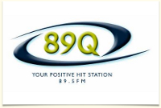
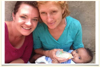

1 -2-3-4
Continue To Give's tools really work! See how our tools have helped others.
Church

New Hope Community Church
www.newhopecambridge.org/ "Continue to Give is a great way to provide our people a variety of options to financially support ministry and ministry projects. The website, facebook app, QR code, mobile site, and, our favorite...the giving kiosk which allows people to swipe their debit cards...are all ways that make tithing and giving more convenient in a world where screens and plastic are replacing paper and coin. The security, low cost, and great service make Continue to Give an excellent giving solution!"Radio Station
89Q
www.89q.org "Continue to Give make sense. It allows people to donate online with either a one-time donation or a recurring donation. Continue to Give makes it not only easy for the donor, but for the Organization receiving the donation. By incorporating the Social Media aspect with online giving, it creates excitement with our audience on Facebook. Continue To give also helps keep processing fees down by offering ACH through checking accounts. This way our organization benefits more! By using Continue to Give, it has allowed me to free up more of my time to focus on other things! We are pleased with what Continue to give has done with our online giving program!"Individual
Tina Jensen
"Continue to give has been an indispensable asset for us raising money with our adoption! There is no way we could have raised the funding we did without this incredible website. One of my favorite parts about Continue to Give is the link it has to my blog. Now I know that every time I update my blog my financial givers will get notified and be able to stay on track with our current situation. Tina and Erick Jensen"Mission Organization
Global Outreach Foundation
www.globaloutreachfoundation.org "Continue To Give has been instrumental in helping us increase online giving, public awareness and missions support! It is vital that funds are correctly designated and Continue To Give makes that very easy, all with minimal transaction fees. Additionally, there is a short turnaround time from when a donor gives and we receive the funds, meaning our missionaries get the money they need in a very timely manner! When I've needed technical support, they've been right there. Continue To Give has been nothing but successful for us and I highly recommend them as an online giving resource for churches, ministry individuals, and missions organizations!! Shannon"Donor
ShirleyAnn
"I know God loves a cheerful giver. I believe He is a God of order so He likes consistent giving as well. That is why I like and use Continue To Give. When I get really busy during the summer months I know the charities that are dear to my heart are receiving a monthly donation. It is a great giving tool to spread the Gospel."SWIPE FOR MORE ➜
1-2-3-4
Intro
intro3
adfadsf
1-2-3-4
Intro
intro4
adfadsf
1-2-3-4